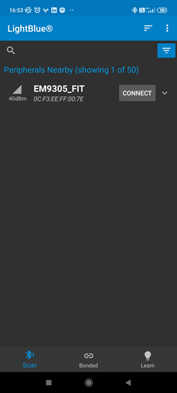
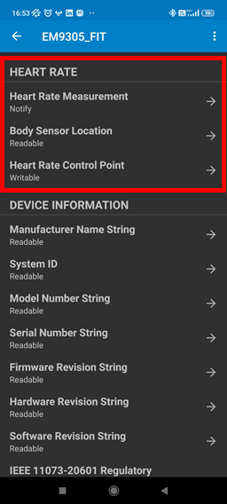

FIT example
Overview
This example configures the EM9305 device as a fitness like pod.
It exposes the following profiles:
Heart Rate
Device Information
Battery Service
Running Speed and Cadence
Acting as a peripheral, it allows a central device to be aware of its presence by doing extending advertising. To achieve this operation, this application example is linked with the provided emb_peripheral library.
Warning
This application has configurable SMP parameters smpCfg_t where minKeyLen can be specified. Reducing this value from 16 to 7 (minimum) reduces the entropy of the encryption key making the device less secure.
Build
The build target of this example is: nvm_emb_fit
cd <sdk>\build
cmake --build . --target nvm_emb_fit
Run
To program and run the example:
cd <sdk>\tools\blengine
python blengine_cli.py --port COMYY run emsystem_prog ..\..\build\projects\nvm_emb_fit\nvm_emb_fit.ihex --progress
With YY = the COM port number of your DVK (optional if you set it in the file <sdk>\tools\blengine\config.cfg).
Test
To connect to the device, you need a smartphone with a BLE app installed (e.g. LightBlue Android application).
When installed, open the application and start a BLE scan. Find your device. The name is EM9305_FIT.
{kind=link}
Click on CONNECT to connect.
Once connected, you can see the available services including the ‘heart rate’ service.
{kind=link}
Selecting this service will show a ‘subscribe’ button. If you enable the Heart Rate Measurement notifications, you should see the Energy Expended value increasing every second like in the heart rate application example.
Note that the exposed value is simple a counter which is incremented every second.